UD8. Programació Orientada a Objectes. Classes amb atributs.
1. Introducció a la POO
Un mon orientat a objectes
Tot el que ens envolta són objectes:
I, com podem veure, cada objecte és d'una classe en concret:
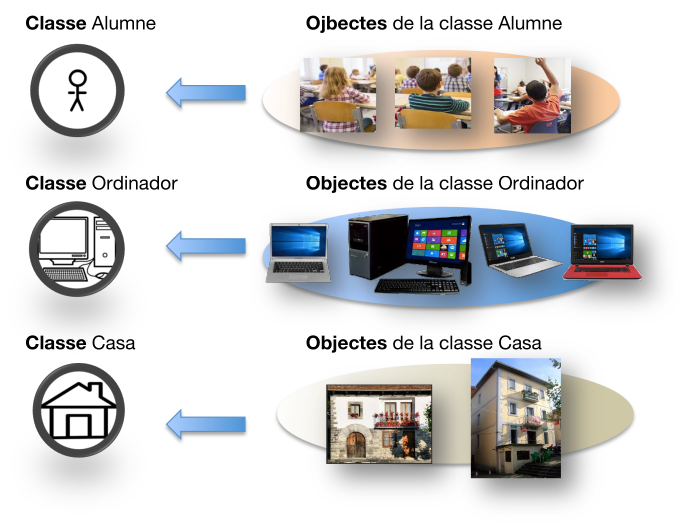
Què és la Programació Orientada a Objectes (POO)?
És una forma de programar (un paradigma de programació) que es basa precissament en això: en els objectes. Primer definiriem una classe i, a partir d'aquesta, podrem crear els objectes d'eixa classe (igual com creem variables d'un tipus determinat).
Què es posa en una classe?
En una classe posarem allò que volem que descriga els objectes d'eixa classe. Si ens adonem, podem descriure un objecte per "com és" i "què pot fer":
- Com és l'objectes? Voldrem indicar unes característiques o atributs.
- Què pot fer l'objecte? Voldrem indicar unes operacions o mètodes.
Aclariment
Per anar pas a pas, en aquest tema només vorem els atributs de les classes. Els mètodes els veurem en el tema següent.
Exemple gràfic d'una classe i els seus objectes
Suposem que volem fer un programa sobre la gestió dels alumnes de l'institut. Cada alumne és un objecte.
- Com és cada alumne? Voldríem saber el seu codi, nom, domicili i curs.
- Què pot fer cada alumne? Matricular-se, examinar-se...
Si l'institut no estiguera, per a guardar les dades de cada alumne caldrien fitxer amb la mateixa estructura (codi, nom, domicili i curs). Per tant, necessitaríem una plantilla on estiguera eixa estructura i fer fotocòpies d'ella:
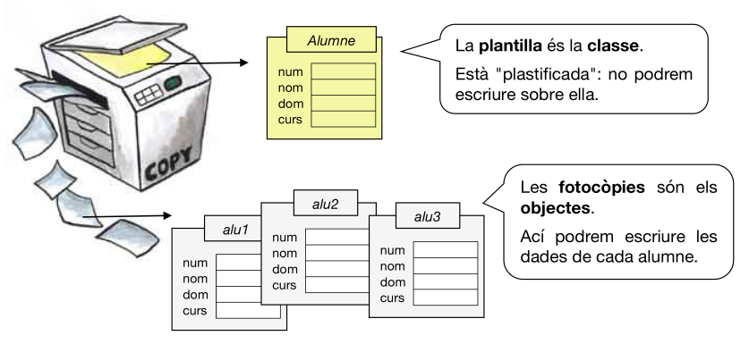
Terminologia de la POO
| CONCEPTES POO | TERMINOLOGIA INFORMAL | ANALOGIA EN LA VIDA REAL | EXEMPLES |
|---|---|---|---|
| Classe | Tipus | Plantilla plastificada | Alumne |
| Objectes | Variables | Fotocòpies a emplenar | alu1, alu2, alu3 |
| Atributs | Variables membre | Apartats de la fitxa | num, nom, dom, curs |
| Mètodes | Funcions i proced. | Accions sobre la fotocòpia | matricularAlumne(), canviDeCurs()... |
| Estat de l'objecte | Valors dels atributs | El que s'escriu en la fotocòpia | num = 3, nom = "Pep" |
Més endavant vorem altres conceptes relacionats amb la POO, com herència, abtracció, polimorfisme, encapsulament, acoblament i cohesió.
2. Classes i objectes en Java
Com ja hem dit, per a poder declarar un objecte, primer necessitem crear una classe (plantilla). Després ja podrem definir els nostres objectes en base a eixa classe.
2.1. Definició de la classe
Anem a vore com podem definir una classe en Java. Però com ja hem dit, en este tema només vorem una classe com un conjunt d'atributs. En el tema següent dins la classe posarem també les operacions o mètodes que es poden fer en cada objecte.
Exemple
- La classe Alumne és la plantilla a partir de la qual crearem objectes on guardarem les dades de cada alumne. Per convenció, el nom de la classe sempre començarà en majúscula.
Sintaxi
| Java | |
|---|---|
- Ja vorem si hem de posar que un atribut és public o private.
De moment crearem les classes en el mateix fitxer on tenim el main, fora de la classe principal, però ja vorem que convindria que cada classe anara en un fitxer (que tindria el mateix nom de la classe).
| ProjecteMeu.java | |
|---|---|
Exercici 1. Definir classes en Java
Crea un projecte de nom Proves i defineix en ell les classes corresponents a les següents estructures de dades:
- Una data: dia, mes i any.
- Un temps: hores, minuts, segons i centèsimes.
- Un rectangle: cantó superior dreta (x1, y1) i cantó inferior esquerra (x2, y2).
- Un concursant: nom complet, nom artístic i any de naixement.
- Un CD d'àudio: grup, títol del disc, any publicació, quantitat de cançons.
- Un nom complet de persona: nom, primer cognom i segon cognom.
- Un número de telèfon: prefix i resta del número.
- Un domicili: carrer, número, pis, porta, codi postal, població i comarca.
- Un color RGB: format per 3 enters (quantitat de roig, de verd i de blau).
2.2. Definició dels objectes
Abans hem vist com crear en Java la classe ("plantilla") Alumne. Ara volem guardar les dades de cada alumne. Per a això crearem objectes ("fotocopies") a partir d'eixa classe.
En Java, esta definició d'objectes es fa amb la paraula clau new (la que usem per als vectors, ja que també són objectes) i indicant la classe a partir de la qual es creen.
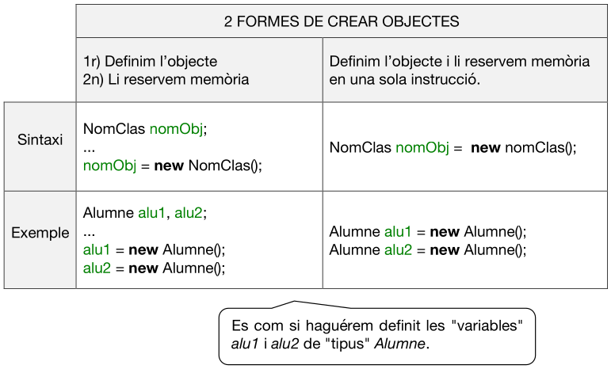
Exemple bàsic
| Java | |
|---|---|
- Amb la paraula clau new creem un objecte de la classe Alumne i el guardem en la variable alu1. A partir d'ara, alu1 és un objecte de la classe Alumne. El mateix per a alu2 i alu3.
Exercici 2. Definir objectes en Java
En el main del projecte Proves, crea els objectes corresponents a les classes que has definit en l'exercici anterior. Practica amb les 2 forme vistes.
2.3. Ús dels atributs dels objectes
Ja hem creat la classe (el nou "tipus") i els objectes ("variables" d'eixe nou tipus). Ara anem a utilitzar eixos objectes.
Per a accedir als atributs d'un objecte, utilitzarem l'operador punt (.). Així, per a accedir a l'atribut num de l'objecte alu1, farem alu1.num.
Exemples d'usos d'atributs
- Assignació per teclat
- Assignació directa
- Consulta
- Concatenació, impressió...
- Autoincrement
Veiem que els atributs dels objectes es poden utilitzar com qualsevol variable "normal": assignar valors, llegir-los, mostrar-los per pantalla, operar amb ells...
Exemple complet de definició de classe, objectes i ús dels atributs
- Definirem la classe fora de la classe principal (encara que en un futur cada classe anirà en un fitxer diferent).
- Crearem els objectes a1 i a2 de la classe Alumne dins del main (o de qualsevol mètode).
- Assignarem els atributs.
Exercici 3. Ús dels atributs dels objectes
En el projecte Proves assigna valors als atributs dels objectes que has creat i mostra'ls per pantalla.
2.4. Ús dels propis objectes
Ja hem vist com treballar amb els atributs dels objectes. Ara vorem com tractar els objectes en conjunt (sense indicar els atributs).
Quan usem un objecte (sense indicar cap atribut), estarem accedint a l'adreça de memòria on estan es dades de l'objecte, igual que passa en els arrays.
Exemple
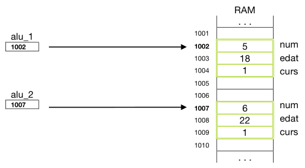
Per tant, hem d'anar en compte quan fem coses com:
- Segurament no estarem fent allò que pretenem ja que estem comparant les adreces de memòria dels objectes (1002 != 1007), no els seus valors.
2.4.1. Copiar objectes
Què passa si copiem objectes amb alu_1 = alu_2?
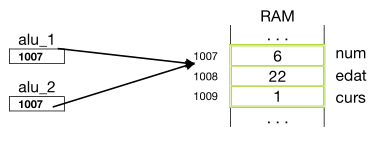
PROBLEMA: En realitat, el que estem fent és copiar l'adreça de memòria, no les dades. Per tant, si canviem un atribut d'un dels objectes, canviarem l'atribut de l'altre objecte també.
SOLUCIÓ: Si el que volíem fer és una còpia dels valors de l'objecte, hauríem de copiar els atributs un a un.
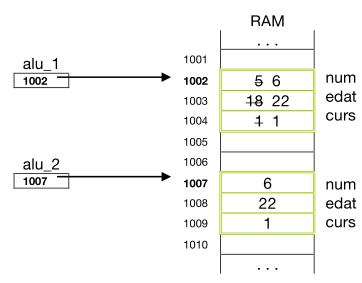
2.4.2. Comparar objectes
Què passa si comparem objectes amb if(alu_1 == alu_2)?
- Només serà true si els dos objectes apunten a la mateixa adreça de memòria.
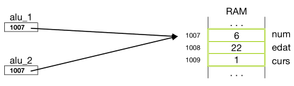
- Però si apunten a adreces diferents, encara que tinguin els mateixos valors, serà false.
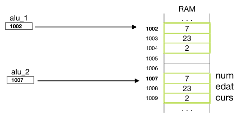
SOLUCIÓ: Si el que volíem fer és comparar els valors dels atributs, hauríem de comparar-los un a un.
Representació gràfica dels objectes
Per a recalcar que un objecte no guarda directament els valors dels seus atributs sinó una adreça a elles, a partir d'ara ho representarem gràficament amb una fletxa.
Per exemple, tenim 3 objectes de tipus Alumne. Imaginem que en un moment donat tenim els següents valors:
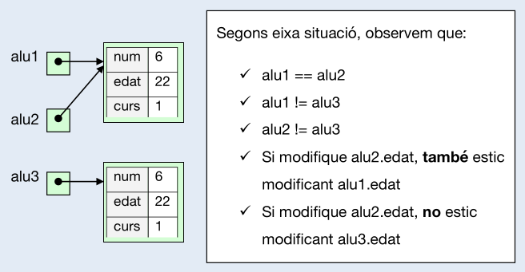
2.4.3. Passar un objecte a una funció
Podem passar un objecte com a paràmetre a una funció. I estarem passant-lo per referència (no per valor). Com ja vam vore, això significa que si canviem els valors dels atributs de l'objecte dins de la funció, aquests canvis es veuran fora de la funció.
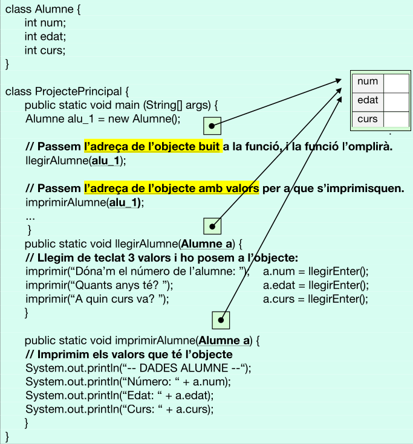
Exercici 4. Passar objectes a procediments
En el projecte Proves, crea els procediments llegirCD i imprimirCD semblants a l'exemple anterior, passant un CD com a paràmetre. Crida-les des del main.
2.4.4. Retornar un objecte
Una funció també pot retornar un objecte. Veiem un exemple on tenim dos funcions que retornen un objecte. Una que no li passa cap paràmetre i una altra que sí.
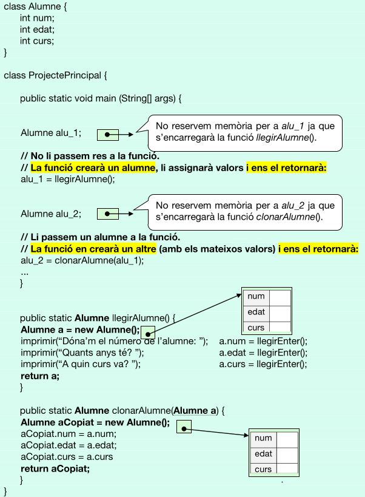
Exercici 5
Modifica el projecte Proves:
Crea el procediment incrementaAny, al qual li passes una data (de la classe Data) i t'incrementa l'any en 1 (però no mostra res). És a dir, cal fer el següent:
- Fes el procediment al qual li passes com a paràmetre una data (dis-li de nom: data). Incrementa en 1 l'any de la data.
- En el main, crea una data (dis-li de nom: d1), posa-li valors i crida al procediment anterior passant-li la data d1.
- Comprova que l'any de la data d1 ha canviat (mostra-ho per pantalla).
Exercici 6. Retornar objectes
Modifica el projecte Proves:
Funció incrementaAnyEnDataNova, a la qual li passes una data (de la classe Data) i et retorna una nova data amb l'any incrementat en 1. És a dir, cal fer el següent:
- Crear una altra data, de nom dNova (declarar-la i reservar-li memòria amb new).
- Copiar en eixa altra data (dNova) les dades de la data del paràmetre però amb un any més.
- Retornar eixa nova data.
En el main crea una data (dis-li de nom: dOrigen), posa-li valors i crida a la funció incrementaAnyEnDataNova passant-li eixa data com a paràmetre. Recorda que hauràs d'arreplegar la data retornada. Per a això, caldrà crear-te prèviament una altra data (dis-li de nom: dDesti), la qual no caldrà que li reserves memòria amb el new.
Comprova en el main que la nova data (dDesti) té els valors esperats: els mateixos que dOrigen però amb un any més (mostra-ho per pantalla).
3. Classes niuades
Ja hem vist que una classe és una estructura que conté distints atributs. Eixos atributs poden ser variables (d'un cert tipus)... o objectes (d'una certa classe).
És com si tinguérem una classe dins d'altra. Eixa classe de dins es diu que és una classe niuada.
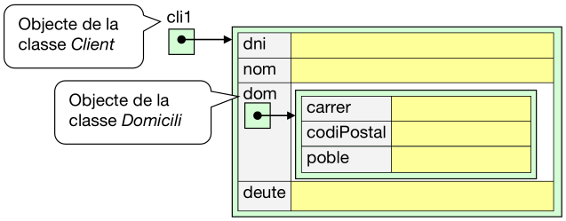
IMPLEMENTACIÓ
Primer crearem la classe Domicili:
- Esta classe podrà estar definida dins la classe Client però nosaltres la posarem fora (per si volguérem crear objectes de la classe Domicili).
A continuació crearem la classe Client:
- O bé: Domicili dom = new Domicili();
Ara vorem la diferència d'indicar o no la reserva de memòria per a la subclasse.
- Sense instanciar l'atribut objecte (és a dir, sense new):
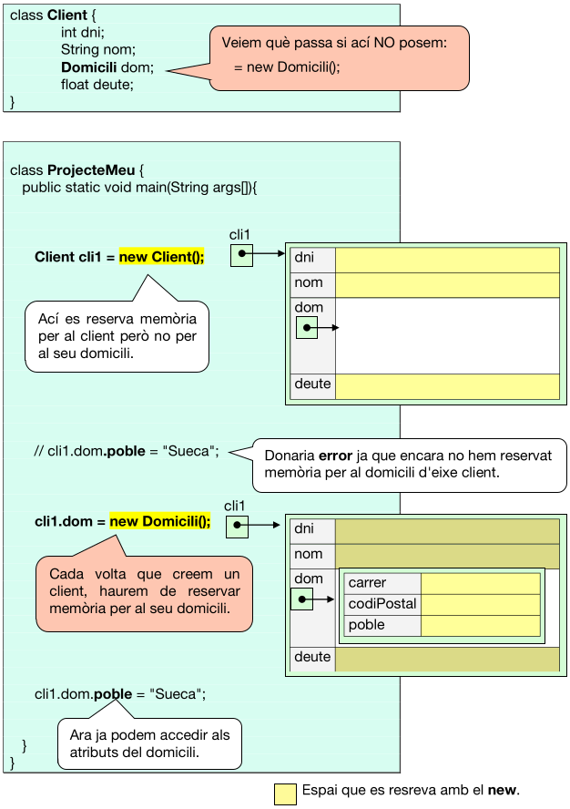
- Instanciant l'atribut objecte (és a dir, amb new):
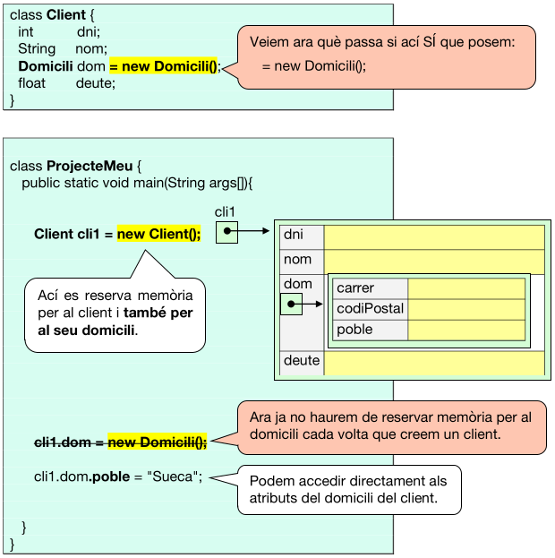
A la vista d'això... quan definirem un atribut objecte amb el new i quan sense new?
-
Si anem a tindre molts objectes de la classe Client però només a uns pocs d'ells els posarem domicili, reservarem memòria per al domicili només als que ho necessiten. Per tant, sense new.
-
Si tots els objectes de la classe Client han de tindre un domicili, reservarem memòria per a tots ells. Per tant, amb new.
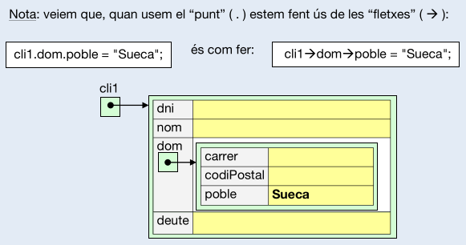
Exercici 7. Classes niuades
En el projecte Proves:
-
Crea la classe Cercle amb els atributs radi, colorVora i colorDins, tenint en compte que els colors han de ser objectes de la classe Color que ja estava definida. Fes-ho de la primera forma que hem vist: la que en la definició de la classe NO es reserva memòria per a la subclasse.
-
Després, en el main crea l'objecte cercle1 (de la classe Cercle) i ompli'l de dades qualseol.
-
Mostra per pantalla les dades de cercle1.
-
Executa el projecte per vore que funciona.
Exercici 8
Crea el projecte Institut. A continuació:
-
Copia en ell les classes NomComplet, Domicili i TelFix (que tenies en el projecte Proves).
-
Crea la classe Alumne que tinga 4 atributs: un nom complet, un domicili, un telèfon del pare i un telèfon de la mare, basant-te en les classes anteriors. És a dir: caldrà fer ús de les classes niuades. Com de tots els alumnes és normal guardar eixes dades, ho farem de la segona forma que hem vist: la que en la definició de la classe es reserva memòria per a la subclasse.
-
Crea la classe Ordinador, sabent que de cadascun voldrem guardar el número de sèrie (enter), la cpu (String), ram (enter) i dd (enter) i, a més, qui és l'alumne que l'utilitza. L'alumne serà un objecte de la classe Alumne. És a dir: cadrà fer ús de les classes niuades. Com no tots els ordinadors tenen un alumne assignat, ho farem de la primera forma que hem vist: la que en la definició de la classe NO es reserva memòria per a la subclasse.
Exercici 9
En el projecte Institut, en el main:
-
Crea 2 alumnes (alu1 i alu2) i ompli'ls de dades qualsevol.
-
Crea 3 ordinadors (ord1, ord2 i ord3), sense omplir-los de dades.
-
Ompli ord1 de dades qualsevol però sense assignar-li cap alumne.
-
Ompli ord2 de dades qualsevol assignant-li les dades d'un nou alumne.
-
Assigna a l'ordinador 1 l'alumne 2.
-
Canvia el número de telèfon del pare de l'alumne 2 (per exemple 5555555)
-
Mostra per pantalla el telèfon del pare de l'alumne que està usant l'ordinador 1. No ho faces a partir de l'alumne 2, sinó a partir de l'ordinador 1. Comprova que ha canviat (ha de mostrar 5555555).
-
Posa un breakpoint en el punt 7 i observa les variables del programa per comprovar com s'han anat omplint els objectes.
4. Vectors d'objectes
L'ús simultani de vectors i objectes ens proporciona una eina potent per a guardar i manipular informació.
Per exemple, suposem que volem guardar les dades dels N clients d'una empresa:
| 0 | 1 | 2 | ... | N-1 | |
|---|---|---|---|---|---|
| dni | 10 | 20 | 30 | ||
| nom | Pep | Pepa | Pepet | ||
| deute | 500.0 | 0.0 | 200.0 |
Abans de vore este tema, haguérem implementat això com 3 vectors paral·lels:
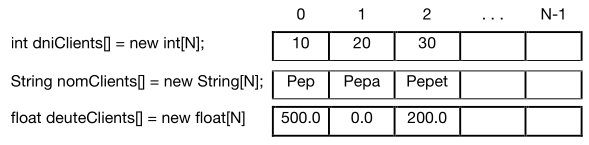
Però ara ho implementarem com un únic vector... de clients. És a dir, d'objectes de la classe Client:
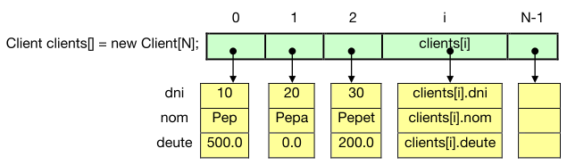
Compte!
El vector és d'objectes. Recordem que un objecte és només una referència i cal reservar memòria per a eixe objecte. Per tant, el new del vector d'objectes només reserva espai per a les referencies i caldrà fer un new per a cada objecte del vector. Ara ho vorem amb la implementació d'un exemple.
Exemple de creació i ús d'un vector d'objectes (100 clients)
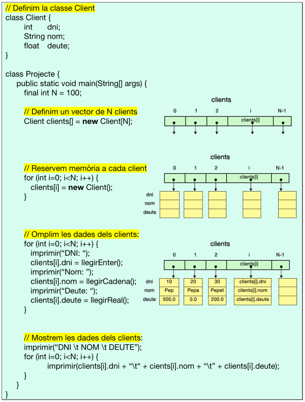
NOTA: també es poden crear matrius n-dimensionals d'objectes, o objectes que tenen alguna matriu com a atribut...
Exercici 10. Arrays d'objectes
BIBLIOTECA
Una biblioteca vol emmagatzemar informació de cada llibre que té:
- Codi de referència (alfanumèric)
- Autors (màxim, 3)
- Títol
- Editorial
- Any de publicació
- Implementa l'estructura necessària per a guardar 100 llibres.
- Reserva memòria per a cadascun d'eixos llibres.
- Dona d'alta un llibre qualsevol.
Exercici 11
LLOGUER DE COTXES
Una empresa de lloguer de cotxes vol tindre guardada la informació de cadascun dels cotxes:
- Matrícula (lletres i número)
- Marca
- Model
- Data de compra (una la classe Data que ja tenim definida)
- Kilòmetres
- Implementa l'estructura necessària per a guardar 100 cotxes (però no reserves memòria per als cotxes).
- Fes un bucle per a omplir les dades dels cotxes.
- Mostra les dades de tots els cotxes.
Exercici 12
EMPRESA CONSTRUCTORA
L'empresa constructora "MACA S.A." promou la construcció de l'edifici de luxe "Xequin-Pis". L'edifici està organitzat en 6 escales (de l'A a l'F). Per cada escala hi ha 8 plantes, i en cada planta hi han 5 portes. La constructora vol tindre registrat de cada vivenda els metres quadrats, habitacions i preu. A més, si la vivenda està venuda, també vol guardar el nom i NIF del nou propietari.
- Definix la classe Vivenda amb les variables: m2, q_hab, preu, nom i nif.
- Definix edifici (al main), com una matriu tridimensional de vivendes. Utilitza les constants necessàries per a establir les dimensions de la matriu.
- Definix el procediment contruirVivenda, al qual se li passa com a paràmetre l'edifici. El procediment demanarà per teclat la identificació de la vivenda i les característiques i les guardarà.
- Definix el procediment comprarVivenda, al qual se li passa com a paràmetre l'edifici. El procediment demanarà per teclat la identificació de la vivenda. Si està fabricada (m2 > 0) i per vendre (camp propietari buit), es demanaran les dades del propietari i es guardaran en el lloc corresponent.
- Definix el procediment propietats, al qual se li passa com a paràmetre l'edifici i el nif d'una persona, i ha de mostrar les dades de totes les seues vivendes.
- Crea al main l'aplicació principal amb un bucle i un menú amb les opcions:
- Construir vivenda
- Comprar vivenda
- Mostrar propietats d'algú
- Eixir
Exercici 13
TALLER DE COTXES
En un taller de cotxes, cada volta que un treballador acaba una feina, inserix en l'ordinador el seu nom, la data (dia, mes i any) i quantes hores i minuts ha estat treballant.
- Defineix la classe Feina amb les variables: nom, dia, mes, any, hores i minuts.
- El programa serà un bucle amb un menú:
- Afegir feina
- Llistar feines d'un treballador
- Eixir
Opció 1: Demanar dades d'una feina i afegir-la en una llista de feines:
| Text Only | |
|---|---|
1 2 | |
Opció 2: Demanar el nom del treballador. Es mostrarà per pantalla una línia per cada feina seua (amb les dades corresponents) i, a la dreta, l'import a cobrar corresponent, a 40€ l'hora. Al final del llistat, es posarà la quantitat d'hores i minuts totals, així com l'import total del treballador.
Exercici 14
HORARIS DE L'INSTITUT
Volem crear una aplicació que ens permeta introduir les dades dels horaris dels grups de l'institut.
Per a cada grup volem guardar el codi del grup i el seu horari. En este horari ha de guardar informació de cada sessió de la setmana (5 dies x 6 franges horàries).No cal guardar en cap lloc els dies de la setmana ni les franges horàries.
Per a cada sessió caldrà guardar el codi del mòdul (assignatura), el nom del professor i el número de l'aula on s'impartirà la classe.
Tria l'estructura de dades més adient per a emmagatzemar tota eixa informació.
El programa tindrà un menú amb estes opcions:
- Crear horari
- Mostrar horari
- Modificar horari
Caldrà definir i utilitzar adequadament estes següents:
- getGrup. Se li passa la llista de grups i un codi de grup. Retornarà l'objecte del grup corresponent. O null si no l'ha trobat.
- creaGrup. Se li passa la llista de grups. Es demanarà per teclat un codi de grup. Si ja està el grup en la llista (crida a getGrup), avisarà. Si no, per cada sessió de la setmana es preguntarà el mòdul, qui l'imparteix i a quina aula, i afegirà eixe grup a la llista. Retornarà l'objecte del grup creat (o null si no l'ha creat).
- mostraHorari. Se li passa la llista de grups, el codi de grup i quina dada d'estes 3 volem mostrar: (M)òdul / (P)rofe / (A)ula. Es mostrarà l'horari per pantalla (en forma de matriu) amb la informació corresponent. SI no existeix el grup retornarà false.
- modificaHorari. Se li passa la llista de grups i el codi del grup que volem modificar. Si existeix, es mostrarà el seu horari i es preguntarà per dia de la setmana (1 a 5) i hora (1 a 6) que es vol modificar. A continuació es preguntarà l'assignatura, el professor i l'aula a canviar (si alguna d'estes dades es deixa en blanc, no es modificarà). A continuació s'actualitzaran les dades corresponents. Si no existeix el grup retornarà false.
A més d'eixes funcions, crea-te'n altres si creus que et fan falta.